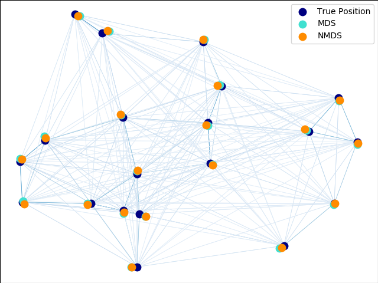

Note
Click here to download the full example code or run this example in your browser via Binder
Multi-dimensional scaling¶
An illustration of the metric and non-metric MDS on generated noisy data.
The reconstructed points using the metric MDS and non metric MDS are slightly shifted to avoid overlapping.
Out:
# Author: Nelle Varoquaux <nelle.varoquaux@gmail.com>
# License: BSD
print(__doc__)
import numpy as np
from matplotlib import pyplot as plt
from matplotlib.collections import LineCollection
from sklearn import manifold
from sklearn.metrics import euclidean_distances
from sklearn.decomposition import PCA
EPSILON = np.finfo(np.float32).eps
n_samples = 20
seed = np.random.RandomState(seed=3)
X_true = seed.randint(0, 20, 2 * n_samples).astype(np.float)
X_true = X_true.reshape((n_samples, 2))
# Center the data
X_true -= X_true.mean()
similarities = euclidean_distances(X_true)
# Add noise to the similarities
noise = np.random.rand(n_samples, n_samples)
noise = noise + noise.T
noise[np.arange(noise.shape[0]), np.arange(noise.shape[0])] = 0
similarities += noise
mds = manifold.MDS(n_components=2, max_iter=3000, eps=1e-9, random_state=seed,
dissimilarity="precomputed", n_jobs=1)
pos = mds.fit(similarities).embedding_
nmds = manifold.MDS(n_components=2, metric=False, max_iter=3000, eps=1e-12,
dissimilarity="precomputed", random_state=seed, n_jobs=1,
n_init=1)
npos = nmds.fit_transform(similarities, init=pos)
# Rescale the data
pos *= np.sqrt((X_true ** 2).sum()) / np.sqrt((pos ** 2).sum())
npos *= np.sqrt((X_true ** 2).sum()) / np.sqrt((npos ** 2).sum())
# Rotate the data
clf = PCA(n_components=2)
X_true = clf.fit_transform(X_true)
pos = clf.fit_transform(pos)
npos = clf.fit_transform(npos)
fig = plt.figure(1)
ax = plt.axes([0., 0., 1., 1.])
s = 100
plt.scatter(X_true[:, 0], X_true[:, 1], color='navy', s=s, lw=0,
label='True Position')
plt.scatter(pos[:, 0], pos[:, 1], color='turquoise', s=s, lw=0, label='MDS')
plt.scatter(npos[:, 0], npos[:, 1], color='darkorange', s=s, lw=0, label='NMDS')
plt.legend(scatterpoints=1, loc='best', shadow=False)
similarities = similarities.max() / (similarities + EPSILON) * 100
np.fill_diagonal(similarities, 0)
# Plot the edges
start_idx, end_idx = np.where(pos)
# a sequence of (*line0*, *line1*, *line2*), where::
# linen = (x0, y0), (x1, y1), ... (xm, ym)
segments = [[X_true[i, :], X_true[j, :]]
for i in range(len(pos)) for j in range(len(pos))]
values = np.abs(similarities)
lc = LineCollection(segments,
zorder=0, cmap=plt.cm.Blues,
norm=plt.Normalize(0, values.max()))
lc.set_array(similarities.flatten())
lc.set_linewidths(np.full(len(segments), 0.5))
ax.add_collection(lc)
plt.show()
Total running time of the script: ( 0 minutes 0.287 seconds)